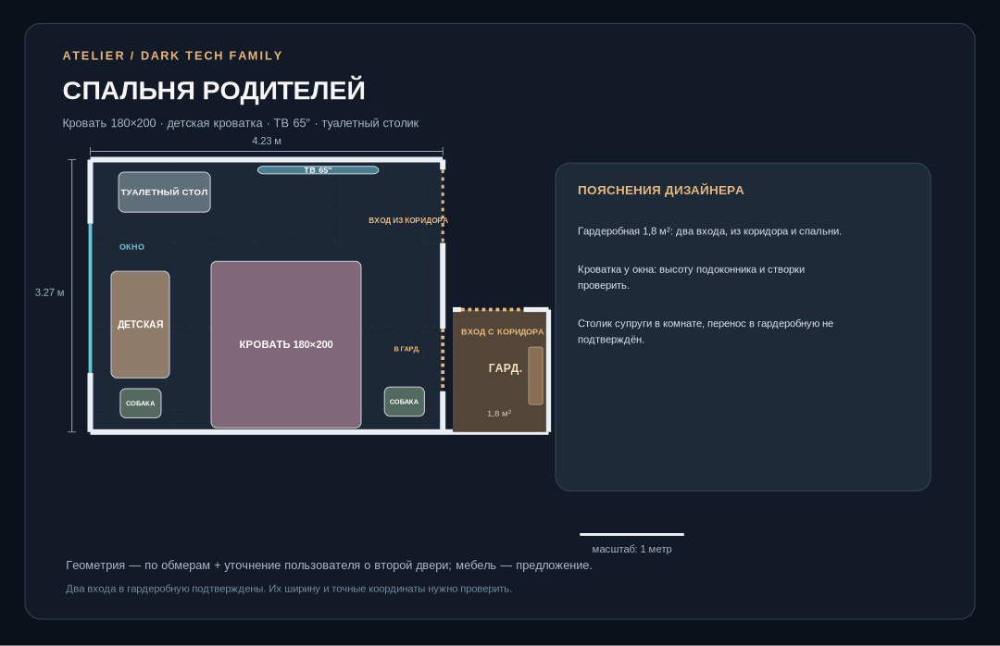

DARK TECH FAMILY
Паспорт дизайн-проекта FINAL 08
Персональная квартира для родителей, двух детей в перспективе, кошки, двух собак и частых гостей. Стиль: тёмный современный / smart home. Бюджет сознательно не определялся.
Интерактивный 3D-тур → Альбом помещений →
Исправление гардеробной
Два существующих входа: из коридора и из родительской спальни. На визуализации оба проёма нанесены; положение второго проёма ориентировочное до детального обмера. Новая перепланировка стены не предполагается.

Помещения и сценарии
| Помещение | Назначение |
|---|---|
| Кухня-гостиная ~15,4 м² | Линейная кухня, диван-кровать для тёщи, ТВ/саундбар, раскладной стол и место для ноутбука; три режима использования |
| Родительская ~13,8 м² | Кровать 180×200, ТВ65, детская кроватка на первые годы, туалетный столик, лежанки собак |
| Детская ~12,2 м² | Сейчас просторная игровая, затем два индивидуальных спальных и рабочих места; верхнее место только в подходящем возрасте |
| Гардеробная ~1,8 м² | Хранение родителей, проход с двух сторон; фасады не мешают дверям |
| Лоджия ~3,4 м² | Концепт FDM-печати и гидропоники; смоляная печать НЕ одобрена для размещения без отдельной вытяжки и безопасных условий |
Что осталось непроверенным
- Точная ширина, положение и направления открытия обеих дверей гардеробной, радиаторы и реальные проходы.
- Высота потолка: 2,72 м в GLB условно. Требуется реальный обмер.
- Габариты дивана в разложенном виде, открывание кухонных фасадов, стол на шесть и его влияние на проход к лоджии.
- Безопасность детей, ветеринарные зоны, приток воздуха, кондиционирование и влагозащита мастерской.
- Техническая возможность полноценной звукоизоляции и противопожарной защиты в панельном доме.
Это проектная концепция, а не комплект рабочих чертежей и не строительное разрешение.